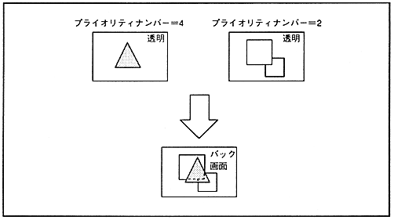

VDP2 can calculate the color data of the top image and the second image obtained by comparing the priority of the sprite and each scroll screen at the specified ratio. At that time, the color calculation ratio of the sprite can be selected for each character from a maximum of 8 values, and the color calculation enable for each scroll screen can be specified for each character or dot by using the special color calculation function. can also do.
¡By calculating the color of the second image and third image (up to the force image when a line color screen is inserted) at a certain rate, the second image can be used to perform color calculations on up to four screens.
Also, by enabling the blur calculation function, you can produce an effect that blurs the background in the distance.
■ 12.1 Color calculation function
The color calculation function is a function that adds the top image and the second image (or an image obtained by adding the second image, the third image, and the force image at a certain rate) at the specified ratio for each RGB color. You can produce the effect of overlapping semi-transparent screens. The color calculation function is shown in Figure 12.1.
Figure 12.1 Color calculation function

■ Normal color operation
There are the following two modes when performing color computation on the top image and the second image.
(1) Top image and second image are added according to the value of color calculation ratio
(2) Add the top image and the second image as they are.